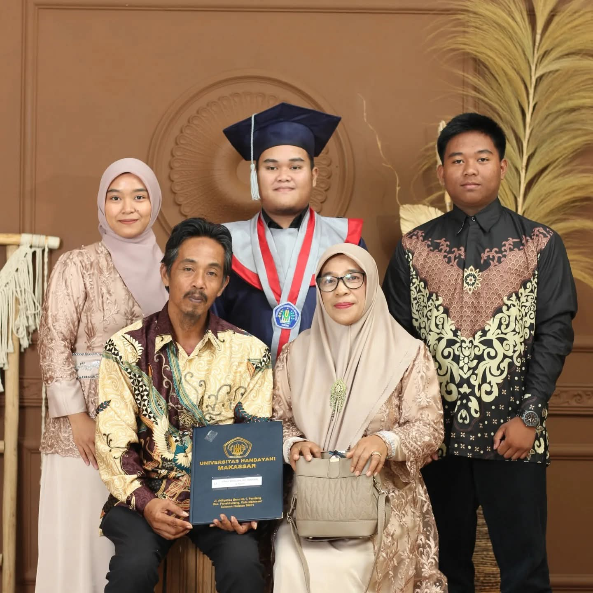
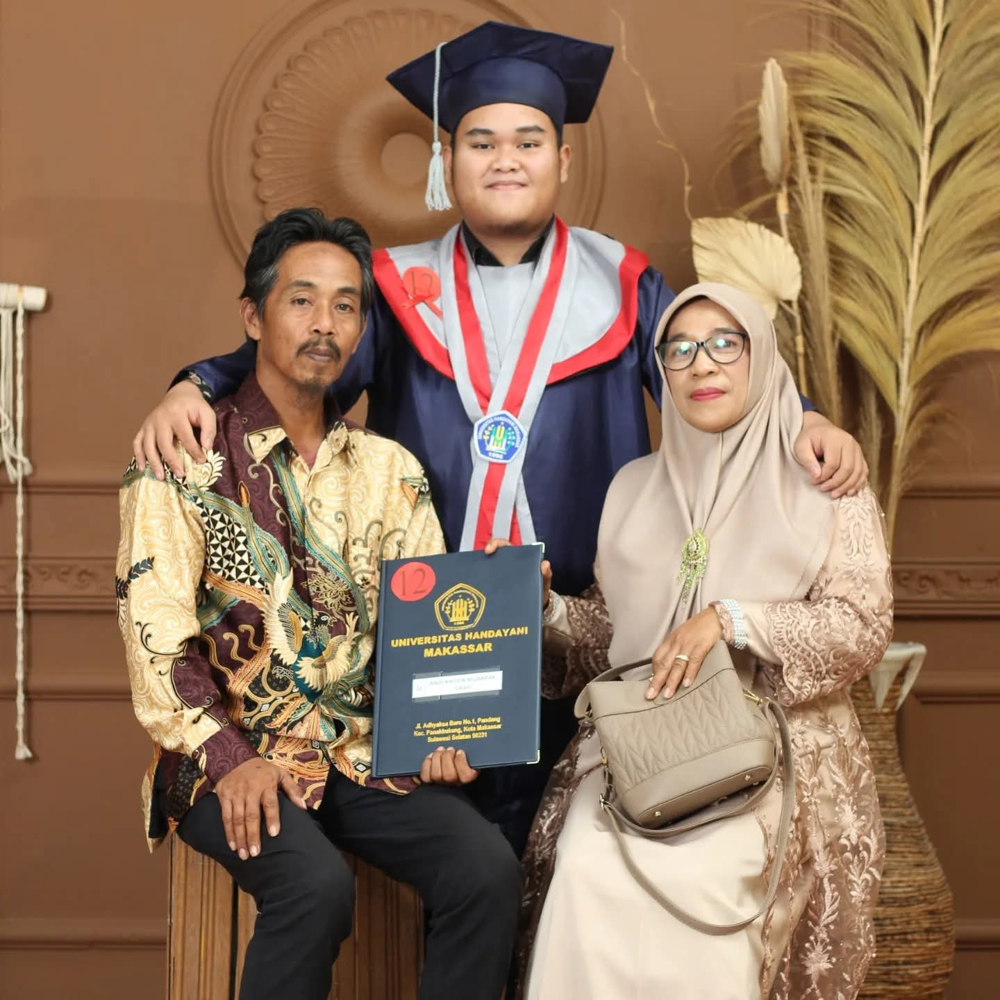
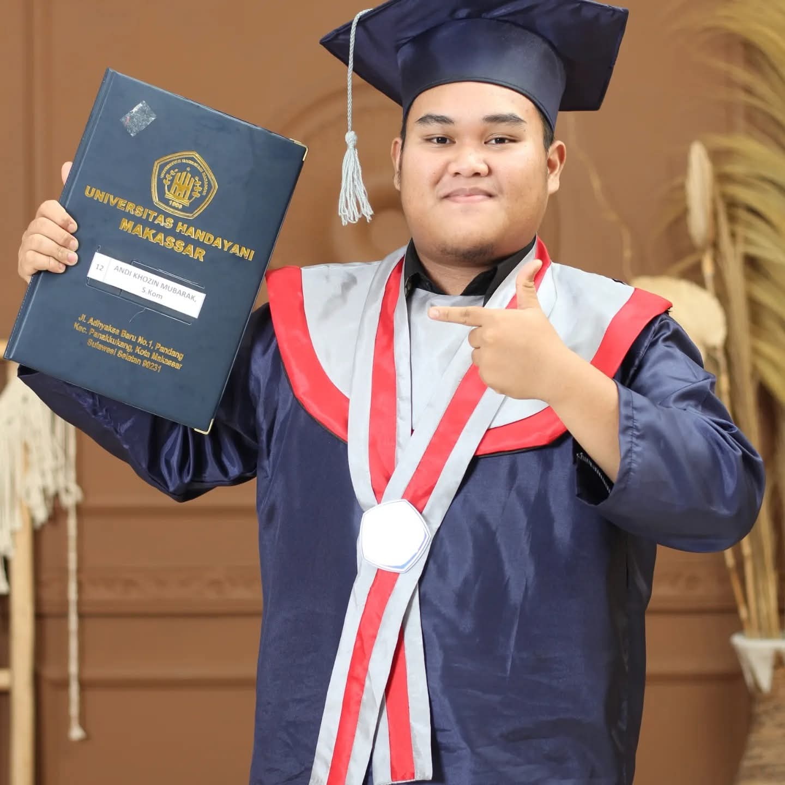

PPG Prajabatan Informatika Gelombang 1 Tahun 2026
Lokasi PPL: SMK Telkom Makassar
"Pendidikan adalah medium transformasi peradaban. Menjadi guru Informatika abad ke-21 bukan sekadar mengajar baris kode, melainkan membentuk nalar kritis, komputasional, dan karakter humanis peserta didik untuk menavigasi masa depan."
Jejak langkah transformasi dari sarjana komputer hingga menjadi pendidik profesional yang berakar pada kearifan lokal.
Lahir dan dibesarkan di tanah Sulawesi Selatan, perjalanan saya dimulai dari pencapaian gelar Sarjana Komputer (S.Kom) dalam bidang Teknik Informatika di Universitas Handayani Makassar. Ketertarikan yang mendalam pada arsitektur sistem informasi dan logika komputasi menyadarkan saya bahwa penguasaan teknologi terbesar akan menjadi sia-sia jika tidak diwariskan secara pedagogis kepada generasi pelanjut.
Keputusan melangkah ke ranah Program Studi Pendidikan Profesi Guru (PPG) Prajabatan Universitas Islam Makassar adalah sebuah panggilan pengabdian. Melalui praktik nyata di SMK Telkom Makassar, saya berkomitmen penuh mengubah kompleksitas ilmu komputer menjadi materi pembelajaran yang inklusif, adaptif, dan menyenangkan.
"Mengajar tidak sekadar mentransfer pengetahuan, melainkan menyalakan api rasa ingin tahu."
Memandang dan memperlakukan setiap peserta didik sebagai manusia seutuhnya tanpa membeda-bedakan latar belakang, memfasilitasi kebutuhan belajar secara adil dan humanis.
Saling menghargai, memberikan apresiasi positif atas sekecil apa pun pencapaian dan proses belajar siswa guna menumbuhkan rasa percaya diri mereka di ruang kelas.
Memegang teguh komitmen, integritas, dan rasa tanggung jawab bersama dalam menegakkan kebenaran serta kualitas akademik demi kemajuan ekosistem pendidikan.
Evolusi kualitas metodologi pengajaran dan pengelolaan kelas interaktif selama pelaksanaan PPL Terbimbing.
Kumpulan bukti fisik perencanaan perangkat, instrumen penilaian, dan rekaman evaluasi PPL yang dianalisis secara mendalam.
Materi Hak Kekayaan Intelektual & Profesi IT.
Analisis Artefak Lihat Dokumen PDFMateri Budaya Digital & Filter Konten Negatif.
Analisis Artefak Lihat Dokumen PDFVisualisasi etika hukum dan ragam profesi IT.
Analisis Artefak Lihat Dokumen PDF / PPTVisualisasi gerakan internet sehat dan pelaporan konten.
Analisis Artefak Lihat Dokumen PDF / PPTVisualisasi simulasi enkripsi password & Password Manager.
Analisis Artefak Lihat Dokumen PDF / PPTLembar kerja analisis kritis pembajakan aset digital dan profesi IT.
Analisis Artefak Lihat Dokumen PDFLembar kerja perancangan produk infografis filter konten.
Analisis Artefak Lihat Dokumen PDFLembar praktikum mandiri pengamanan akun siber siswa.
Analisis Artefak Lihat Dokumen PDFLembar penilaian berkas perangkat ajar tahapan Asistensi.
Analisis Artefak Lihat Dokumen PDFEvaluasi praktik mengajar terbimbing Siklus 1.
Analisis Artefak Lihat Dokumen PDFEvaluasi praktik mengajar terbimbing Siklus 2.
Analisis Artefak Lihat Dokumen PDFEvaluasi praktik mengajar terbimbing Siklus 3.
Analisis Artefak Lihat Dokumen PDFUmpan balik konstruktif dan skor pencapaian dari Pamong.
Analisis Artefak Lihat Dokumen PenilaianSkor validasi kelayakan kompetensi pendidik dari UIM.
Analisis Artefak Lihat Dokumen PenilaianRekaman pelaksanaan model PBL materi regulasi HKI.
Analisis Artefak Tonton Video Full SkenarioRekaman performa KBM berbasis proyek filter konten.
Analisis Artefak Tonton Video Full SkenarioRekaman unjuk performa mandiri aplikasi Bitwarden.
Analisis Artefak Tonton Video Full SkenarioBagaimana pilar-pilar teori pendidikan modern diintegrasikan secara nyata ke dalam laboratorium Informatika SMK.
Menggeser dominasi ceramah searah (Siklus 1) menjadi eksplorasi mandiri terbimbing dan diskusi kelompok (Siklus 3)[cite: 24, 191]. Siswa diposisikan sebagai subjek pembangun ilmu, meningkatkan daya responsif terhadap tantangan logika komputer[cite: 170].
Mengintegrasikan *Technological, Pedagogical, and Content Knowledge*. Pengetahuan sintaks pemrograman (*Content*) disampaikan melalui strategi pengondisian kelas bermutu (*Pedagogical*) dengan dukungan platform Kahoot, proyektor, dan YouTube (*Technological*)[cite: 14].
Mengakomodasi modalitas belajar siswa (Visual lewat video/grafis PPT, Auditori lewat pemaparan interaktif, Kinestetik lewat aksi pengerjaan praktikum mandiri di komputer) sesuai kesiapan belajar individu demi mencapai ketuntasan merata[cite: 176].
Penerapan model PjBL menuntut siswa berkolaborasi memecahkan masalah riil kegagalan jaringan industri. Mengasah kecerdasan majemuk (*Multiple Intelligences*) terutama dalam ranah interpersonal dan logis-matematis.
Pendidikan adalah menuntun segala kodrat yang ada pada anak (kodrat alam dan kodrat zaman digital). Melalui *Sistem Among*, pendidik mengayomi dengan prinsip *Ing Ngarsa Sung Tulada, Ing Madya Mangun Karsa, Tut Wuri Handayani* di era informasi.
Menanamkan karakter Beriman & Bertakwa (melalui doa bersama di pembukaan), Bernalar Kritis, Mandiri, dan Gotong Royong dalam proyek kelompok[cite: 4, 192]. Pembelajaran reflektif diaplikasikan untuk perbaikan tiada henti di akhir setiap sesi[cite: 101].
Linimasa vertikal perkembangan pola pikir, penguatan kompetensi pedagogik, dan pembentukan profesionalisme guru.
Memasuki PPG Prajabatan 2026 di UIM dengan ego sebagai lulusan Teknik Informatika yang menganggap transfer ilmu komputer adalah hal linier. Di fase ini, pemikiran saya dibongkar untuk memahami pentingnya esensi pedagogi dan psikologi perkembangan anak.
Menghadapi realitas dinamika kelas. Menerapkan nilai budaya *Sipakatau* dan *Sipakalebbi* untuk mendekati karakteristik siswa SMK yang kritis namun rentan kehilangan fokus jika pembelajaran berlangsung monoton.
Mengalami hambatan dominasi metode ceramah yang berujung pasifnya siswa[cite: 12]. Mengevaluasi melesetnya manajemen waktu proyek kelompok, memaksa saya melakukan refleksi mandiri yang mendalam demi perbaikan aksi konkret[cite: 101].
Keberhasilan mengintegrasikan apersepsi terstruktur, permainan edukatif Kahoot yang optimal, serta kontrol kelas yang humanis[cite: 163, 177, 184]. Kompetensi pedagogik menyatu sempurna dengan kompetensi profesional informatika.
Komitmen jangka panjang mewujudkan profil pendidik Informatika Abad ke-21 yang kompeten, humanis, dan adaptif.
"Menjadi pendidik Informatika terdepan yang menginspirasi, berbasis TPACK kuat, berkarakter Pancasila, dan adaptif terhadap disrupsi teknologi dengan tetap mengedepankan keluhuran budi pekerti serta pendekatan humanis."
Mahir merancang kurikulum operasional akomodatif, mengelola kelas digital, dan menyusun asesmen otentik perkembangan siswa.
Menguasai materi esensial informatika secara mendalam (algoritma kompleks, pemrograman terstruktur, arsitektur jaringan industri modern).
Mampu menjalin relasi komunikasi edukatif yang efektif, empatik, dan kolaboratif bersama siswa, rekan sejawat, orang tua, dan industri.
Menampilkan kepribadian yang mantap, stabil, dewasa, arif, berwibawa, dan menjadi teladan moral berlandaskan ketakwaan.
Metrik kuantitatif dan kualitatif pencapaian kompetensi berdasarkan instrumen resmi Lampiran 7 dan Lampiran 8 PPG.
Pertemuan 9-10 (Asistensi / Terbimbing)
**Catatan DPL (Dr. Mulyadi, M.Pd.):** "Konstruksi perangkat pembelajaran menunjukkan kematangan konsep dan penguasaan media interaktif yang sangat siap untuk kelas vokasi modern."
Pertemuan 11-12 (Pembelajaran Terbimbing)
**Catatan Guru Pamong (Ali Akbar, S.Kom., M.Pd.):** Penguasaan materi esensial mengenai Hak Kekayaan Intelektual tersampaikan secara runut dengan pelibatan aktif siswa melalui platform digital.
Pertemuan 13-14 (Pembelajaran Terbimbing)
**Catatan Guru Pamong (Ali Akbar, S.Kom., M.Pd.):** Penyaringan konten negatif disajikan lewat metode reflektif yang baik, interaksi dua arah berjalan natural meski penguatan beberapa bagian sub-materi perlu dieksplorasi lebih mendalam.
Pertemuan 15-16 (Pembelajaran Terbimbing)
**Catatan Guru Pamong (Ali Akbar, S.Kom., M.Pd.):** "Siklus 3 menunjukkan lompatan besar dalam hal ketenangan instruksional, ice breaking sangat melekat fungsional, kontrol siswa istimewa."
Pemetaan lokasi instansi PPL, pusat perkuliahan PPG, dan almamater sarjana komputasi.
Tempat pelaksanaan Praktik Pengalaman Lapangan (PPL) dan implementasi manajemen pembelajaran di SMK Telkom Makassar.
Pusat orientasi akademik Lembaga Pendidikan Tenaga Kependidikan untuk program PPG Prajabatan di Universitas Islam Makassar.
Institusi pendidikan tinggi tempat menyelesaikan studi teknik informatika dan memperoleh gelar Sarjana Komputer di Universitas Handayani Makassar.